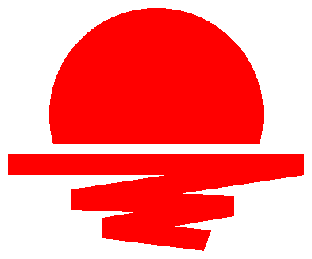

관계자 외 열람금지
비밀번호를 입력해 주세요
삭제
되돌릴 수 없습니다
이 문서를 수정합니다
작성 화면으로 넘어갑니다.수정 후에는 지금 문서에 덮어쓰기 됩니다.

supabase-config.js 에 Supabase 프로젝트 URL과 anon 키를 입력하면 조회 기능이 켜집니다. 설정 방법은 SUPABASE-SETUP.md 를 참고해 주세요.
supabase-config.js
SUPABASE-SETUP.md